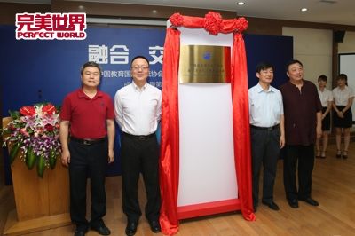

文化创意产业又建新的平台——"教育与文化创意产业分会"成立
www.wanmei.com 2015-06-17
6月17日上午，北京大学、清华大学、中国传媒大学等14所国内著名高校的校领导和中国教育出版传媒集团、北京联盟影业、完美世界等近10家著名企业的负责人集聚在北京逸夫会议中心，共同庆祝中国教育国际交流协会教育与文化创意产业分会的成立。

中国教育国际交流协会教育与文化创意产业分会成立。自左至右为文创分会理事长、中国传媒大学副校长廖祥忠，文创分会副理事长、完美世界（北京）网络技术有限公司首席执行官萧泓博士，中国教育国际交流协会秘书长生建学，文创分会副理事长、北京联盟影业董事长郝亚宁。
近年来，我国动漫、游戏、影视等文化创意行业迅猛发展。以游戏产业为例，据《2014年中国游戏产业报告》数据，2014年游戏行业规模达到1144.8亿元，成为千亿级产业。电影行业也蒸蒸日上，据6月10日普华永道发布的《2015—2019年全球娱乐及媒体行业展望》报告预计，2015年中国的电影票房收入将首次超过50亿美元。
但超高速发展中的文化创意产业也遭遇了短板——人才缺口。人才创造力是文化创意产业的核心，产业的发展对人才在数量和质量上都提出更高要求。目前我国无论是人才的总量，还是人才的结构和整体素质上，都与产业要求严重脱节。国内产业人才总量不足和质量堪忧的情况显然制约了整体文化创意产业的可持续发展。培养高端文创人才，已成为亟待解决的问题。
针对这一问题，国内一些具有前瞻目光的高校和企业与中国教育国际交流协会一起酝酿成立"教育与文化创意产业分会"（以下简称"文创分会"），以期从产业发展的角度和国际教育的高度来形成一个高端文化创意人才培养、优秀文化创意挖掘和文化创意产业可持续发展的机制和平台，为把我国建设成为文化大国而努力。
中国教育国际交流协会是中国教育界开展民间对外教育合作与交流的全国性组织，成立34年来，在全国31个省、自治区、直辖市及16个市设有地方协会，与50多个国家和地区的170多个权威教育组织和团体建立了长期稳定的交流合作关系。文创分会设在中国教育国际交流协会之下，正是借助协会30多年国内外教育资源整合的经验，以期在产学研的互动结合中发挥深远的作用。
文创分会成立大会上，中国教育国际交流协会秘书长生建学指出："产学研三方的优势资源融合贯通并加以创新，势必可以打造出文化创意产业更具优势的核心竞争力。"文创分会发起人中国传媒大学副校长廖祥忠、北京动漫游戏产业联盟董事长郝亚宁、完美世界（北京）网络技术有限公司首席执行官萧泓博士等发言嘉宾也对文创分会的发展寄予了期望，并指出文创分会通过制定一些可行的标准、树立一定的榜样，必定能够推动整个文化创意产业领域各种实际的工作，不仅能促进中国文化创意产业的发展，而且通过国际交流，还可以在国际上发挥更大的影响力。